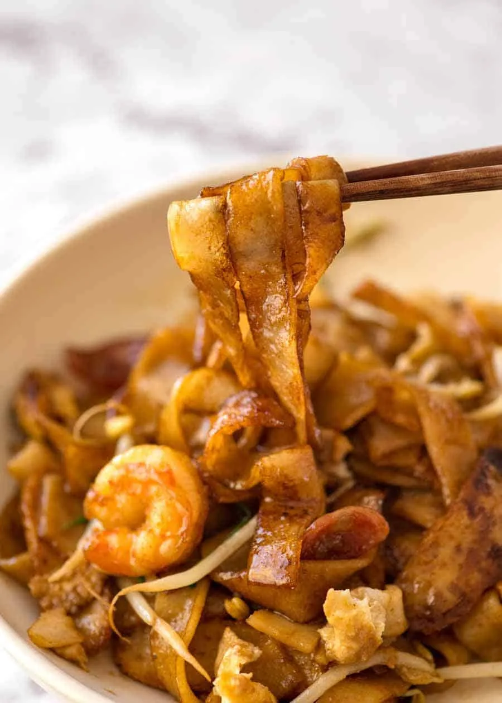

Ingredients
- 200g flat rice noodles
- 100g shrimp, peeled
- 2 eggs
- 2 cloves garlic, minced
- 2 tablespoons soy sauce
- 1 tablespoon chili paste
- Bean sprouts
- Chives
Instructions
- Heat oil in a wok and stir-fry garlic until fragrant.
- Add shrimp and cook until pink, then push them aside.
- Crack in the eggs and scramble lightly.
- Add the noodles, soy sauce, and chili paste, stirring well.
- Toss in bean sprouts and chives, cooking for another minute. Serve hot.